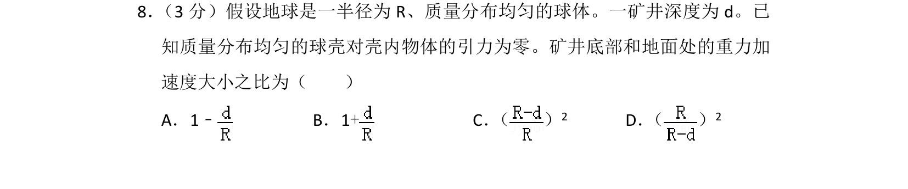
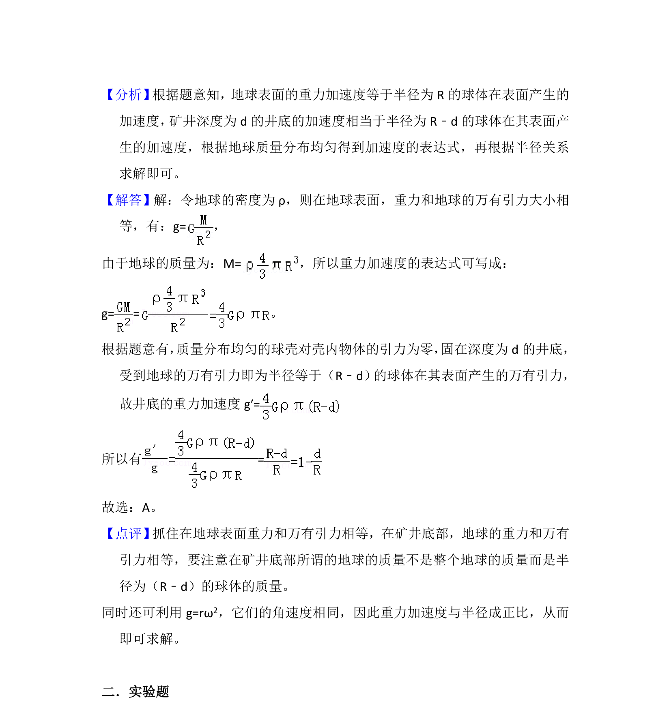

考点：万有引力定律 重力加速度 质量分布均匀球体

考察质量分布均匀的球体内部重力加速度与距球心距离的关系，利用球壳对内部物体引力为零的性质求比值。

📄 原 PDF 第 7 页：
素材/真题/吉林/2008-2024·（吉林）物理高考真题/2012年高考物理试卷（新课标）（解析卷）.pdf
8． （3分）假设地球是一半径为R、质量分布均匀的球体。一矿井深度为d。已 知质量分布均匀的球壳对壳内物体的引力为零。矿井底部和地面处的重力加 速度大小之比为（ ） A．1﹣B．1+C． （ ） 2 D． （ ） 2
【考点】4F：万有引力定律及其应用．菁优网版权所有 【专题】16：压轴题；528：万有引力定律的应用专题．